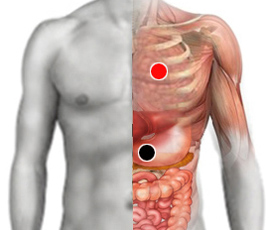

Polifagia, gula (Ivan)
Pares
estómago - corazón
estómago - hígado

Generalidades:
Es un par de tipo emocional. Personas incapaces de controlar su apetito. Puede estar relacionado con la bulimia, la anorexia; y por supuesto, con el soprepeso. Emocionalmente habrá que revisar la autoestima, relación con la madre (aún desde la etapa intrauterina), y muchos otros factores de tipo psicológico y sofrológico.
Se puede probar en personas con sobrepeso ya que puede deberse también a desequilibrios bioquímicos o de neurotransmisores.
Rastrear pares disfuncionales (equilibrio glandular, funcionamiento del sistema digestivo).
Revisar pares psicoemocionales .
También checar: cresta iliaca anterosuperior.